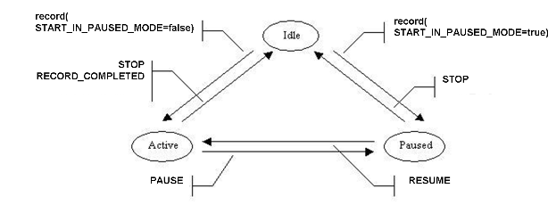
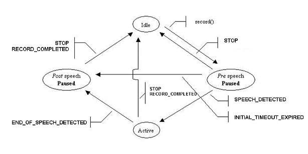

|
||||||||||
| PREV CLASS NEXT CLASS | FRAMES NO FRAMES | |||||||||
| SUMMARY: NESTED | FIELD | CONSTR | METHOD | DETAIL: FIELD | CONSTR | METHOD | |||||||||
public interface Recorder
Defines a method for recording media stream(s) into a MediaStreamContainer
(usually a data file).
A Recorder retrieves the media stream from the Joinable object to which the
MediaGroup is joined; In the simple case, it is a NetworkConnection, and the
data come from the network. Transcoding is automatically included,
when the codecs don't match.
By default, the file format is determined by the file name extension, and the
codec is the one of the incoming stream.
Alternately, the application can request a variety of codecs, see
CodecConstants.
When the record
When the recording is finished, a RecorderEvent is delivered through the
onEvent() callback.
Run Time Controls can be used to stop recording.

ACTIVE<=>PAUSED">The recorder is either Idle, Active, or Paused.
record(URI, RTC[], Parameters)START_IN_PAUSED_MODESTART_IN_PAUSED_MODE
When recording stops, the state becomes Idle.
Recording stops for a variety of reasons.
PAUSEPAUSEDMediaEventListener onEvent(RecorderEvent)
RESUMERESUMEDMediaEventListener onEvent(RecorderEvent)
IVR configSpec).

PRE-SPEECH-PAUSED<=>ACTIVE<=>POST-SPEECH-PAUSED">In that MediaConfig case, both state diagrams should be taken into account.
SpeechDetector parameters, specific RecorderEvent
qualifiers & supported RTC triggers are defined in the
SpeechDetectorConstants interface.
When the MediaStreamContainer can store an audio and a video track, and the MediaGroup (containing the Recorder) has been configured with audio and video capabilities, then both tracks are recorded, with synchronisation.
| Field Summary | |
|---|---|
static Parameter |
APPEND
Indicates that recording should append to the end of an existing TVM rather than overwrite it. |
static Parameter |
AUDIO_CLOCKRATE
The desired clock rate (or sample rate) of the audio encoding The value is an Integer, in Hz. |
static Parameter |
AUDIO_CODEC
Parameter identifying the audio Codec used for a new recording. |
static Parameter |
AUDIO_FMTP
A string-valued list of detailed audio codec parameters, in the format described by rfc4566. |
static Parameter |
AUDIO_MAX_BITRATE
The maximum accepted bitrate for the audio stream. |
static Parameter |
BEEP_FREQUENCY
The frequency of the start beep. |
static Parameter |
BEEP_LENGTH
Length of Beep preceeding recording. |
static Action |
CANCEL
Cancel the current recording operation. |
static Value |
DETECT_ALL_OCCURRENCES
value for SPEECH_DETECTION_MODE. |
static Value |
DETECT_FIRST_OCCURRENCE
value for SPEECH_DETECTION_MODE. |
static Value |
DETECTOR_INACTIVE
value for SPEECH_DETECTION_MODE. |
static Parameter |
ENABLED_EVENTS
An array of Recorder EventType's, indicating which events are generated and delivered to the application. |
static Parameter |
FILE_FORMAT
A Parameter identifying the File Format used during recording. |
static Parameter |
MAX_DURATION
Positive Integer indicating the maximum duration (in milliseconds) for a record. |
static Parameter |
MIN_DURATION
Integer indicating minimum duration (in milliseconds) that constitutes a valid recording. |
static Action |
PAUSE
Pause the current operation on a recorder, maintaining the current position in the Media Stream being recorded. |
static Parameter |
PROMPT
Indicates a prompt to be played before the recording starts. |
static Trigger |
RECORD_COMPLETION
Trigger when a Record is completed. |
static Action |
RESUME
Resume the current operation on a recorder if paused |
static Parameter |
SIGNAL_TRUNCATION_ON
Boolean indicating whether signal(DTMF) truncation is enabled. |
static Parameter |
SILENCE_TERMINATION_ON
Boolean indicating if a silence will terminate the recording. |
static Parameter |
SPEECH_DETECTION_MODE
A Parameter identifying the Speech detection mode. |
static Parameter |
START_BEEP
Boolean indicating whether subsequent record will be preceded with a beep. |
static Parameter |
START_IN_PAUSED_MODE
Boolean indicating whether subsequent record will start in PAUSE mode. |
static Action |
STOP
Stop the current recording operation. |
static Parameter |
VIDEO_CODEC
Parameter indicating the video codec to use for a new recording (if it includes a video track). |
static Parameter |
VIDEO_FMTP
A string-valued list of detailed video codec parameters |
static Parameter |
VIDEO_MAX_BITRATE
The maximum accepted bitrate for the video stream. |
| Fields inherited from interface javax.media.mscontrol.resource.Resource |
|---|
FOR_EVER, FOREVER |
| Method Summary | |
|---|---|
void |
record(java.net.URI streamID,
RTC[] rtc,
Parameters optargs)
Record data into the named container (usually a file, local or http), designated by a java.net.URI class. |
void |
stop()
Stops a record() operation that is running, it will terminate and send RecorderEvent.RECORD_COMPLETED. |
| Methods inherited from interface javax.media.mscontrol.resource.Resource |
|---|
getContainer |
| Methods inherited from interface javax.media.mscontrol.MediaEventNotifier |
|---|
addListener, getMediaSession, removeListener |
| Field Detail |
|---|
static final Parameter APPEND
static final Parameter BEEP_FREQUENCY
static final Parameter BEEP_LENGTH
static final Parameter AUDIO_CODEC
INFERRED
For a list of Codec type Values,
CodecConstantsstatic final Parameter AUDIO_FMTP
AUDIO_CODEC must be defined also (and different from FileFormatConstants.INFERRED),
and the string must have a meaning for that codec.
static final Parameter AUDIO_MAX_BITRATE
static final Parameter AUDIO_CLOCKRATE
static final Parameter VIDEO_CODEC
INFERRED
For a list of Codec type Values,
CodecConstantsstatic final Parameter VIDEO_FMTP
AUDIO_FMTPstatic final Parameter VIDEO_MAX_BITRATE
static final Parameter ENABLED_EVENTS
Value is an array of non-transactional Events. Valid Events are:
MediaEventListener
is added using addListener.
RecorderEvent.RECORD_COMPLETED), and the pause/resume events,
(RecorderEvent.PAUSED and RecorderEvent.RESUMED), are always generated.
static final Parameter MAX_DURATION
Resource.FOR_EVER
static final Parameter MIN_DURATION
static final Parameter SIGNAL_TRUNCATION_ON
static final Parameter SILENCE_TERMINATION_ON
RecorderEvent.SILENCE.
MediaConfig for that parameter to operate.
static final Parameter START_BEEP
static final Parameter START_IN_PAUSED_MODE
static final Parameter FILE_FORMAT
INFERRED (The media server uses the file extension to determine the format)
WAV_FORMAT, RAW_FORMAT,
GSM_FORMAT , FORMAT_3GP
CodecConstantsstatic final Parameter SPEECH_DETECTION_MODE
NOTE: a SpeechDetector resource must be included in the MediaConfig for that parameter to operate!
Default: DETECTOR_INACTIVE.
Possible values: DETECTOR_INACTIVE, DETECT_FIRST_OCCURRENCE & DETECT_ALL_OCCURRENCES.
static final Value DETECTOR_INACTIVE
SPEECH_DETECTION_MODE.
If a SpeechDetector resource is included in the MediaGroupConfig, it won't operate (bypass mode).
SPEECH_DETECTION_MODEstatic final Value DETECT_FIRST_OCCURRENCE
SPEECH_DETECTION_MODE.
If a SpeechDetector resource is included in the MediaGroupConfig,
it will detect the first occurrence of speech (cf. SpeechDetectorConstants to tune the speech detection).
SPEECH_DETECTION_MODE,
SpeechDetectorConstants.INITIAL_TIMEOUT,
SpeechDetectorConstants.FINAL_TIMEOUTstatic final Value DETECT_ALL_OCCURRENCES
SPEECH_DETECTION_MODE.
If a SpeechDetector resource is included in the MediaGroupConfig, it will detect all speech occurrences: the SpeechDetector will be "re-armed" after each trigger. (cf. SpeechDetectorConstants to tune the speech detection).
SPEECH_DETECTION_MODE,
SpeechDetectorConstants.INITIAL_TIMEOUT,
SpeechDetectorConstants.FINAL_TIMEOUTstatic final Parameter PROMPT
PROMPT as a shortcut for:
Player.AUDIO_CODEC.
Player.BEHAVIOUR_IF_BUSY is applied.
bargeIn RTC.
Example with prompt and barge-in enabled:
Parameters options = myMediaSessionFactory.createParameters();
options.put(Recorder.PROMPT, URI.create("http://server.com/prompt.3gp"));
myRecorder.record(URI.create("http://server.com/messages/user6367/recorded_message1.3gp"),
new RTC[] {MediaGroup.SIGDET_STOPPLAY},
options);
Note that MAX_DURATION does not apply to the prompt phase; use
Player.MAX_DURATION if needed.
This option requires that the MediaGroup hosting the Recorder also contains
a Player, and a SignalDetector if barge-in is
desired. MediaGroup.PLAYER_RECORDER_SIGNALDETECTOR is a suitable Configuration.
static final Action STOP
static final Action RESUME
static final Action PAUSE
static final Action CANCEL
static final Trigger RECORD_COMPLETION
| Method Detail |
|---|
void record(java.net.URI streamID,
RTC[] rtc,
Parameters optargs)
throws MsControlException
java.net.URI class.
If the container does not exist, it is created. If the container does exist,
the recording is made using the codec type associated with that container, in
case of a WAV file, otherwise, the codec type specified by
AUDIO_CODEC
This method is non-blocking. When the recording is complete, the result is passed in a
RecorderEventMediaEventListener Interface. The
condition that caused recording to stop is available from the completion
event using
getQualifier
The optargs argument specifies values for Recorder
parameters, overridden for a single method invocation. For example,
AUDIO_CODEC or START_BEEP.
See Recorder for more.
Post-conditions: Record completes normally due to one of:
FINAL_TIMEOUTINITIAL_TIMEOUTstop()
method invokedSTOP or CANCEL triggered
streamID - the URI where data is to be storedrtc - An array of RTC (Run Time Control) objects. The RTCs are only active once
record has been invoked and up to the completion of the
record operation, independently of which resource is
referenced in the RTC's Trigger and Action.optargs - a Parameters map of optional arguments, see
Recorder
MsControlException - if requested operation fails.
java.lang.IllegalStateException - if the hosting container has been releasedonEvent({@link javax.media.mscontrol.mediagroup.RecorderEvent})void stop()
RecorderEvent.RECORD_COMPLETED.
The completion event may usually contain the qualifier ResourceEvent.STOPPED if
the operation has actually been stopped upon effect of the call, however the
application must not assume this is always the case.
If recording was already started, the recording is stopped and the content
recorded up to the stop is available to the application after reception of the
RecorderEvent.RECORD_COMPLETED event.
If no operation is running, or has already been stopped but the event not
received by the application yet, the call is void.
|
||||||||||
| PREV CLASS NEXT CLASS | FRAMES NO FRAMES | |||||||||
| SUMMARY: NESTED | FIELD | CONSTR | METHOD | DETAIL: FIELD | CONSTR | METHOD | |||||||||